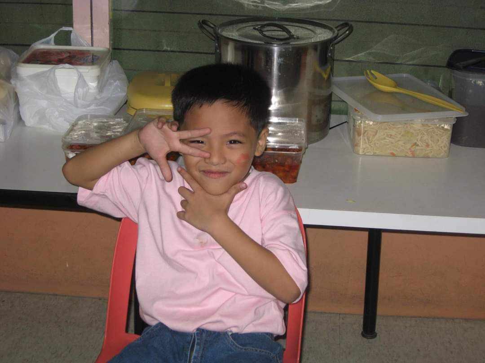
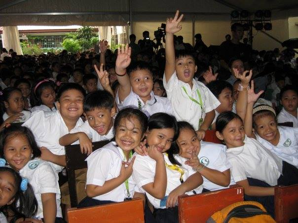
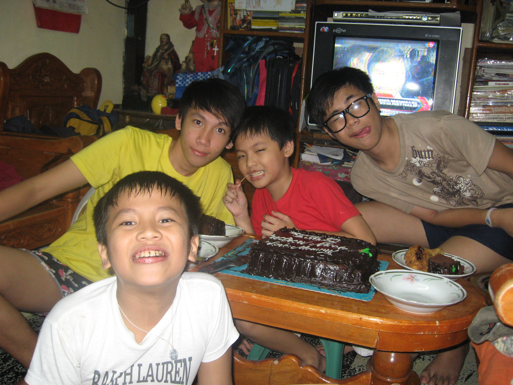
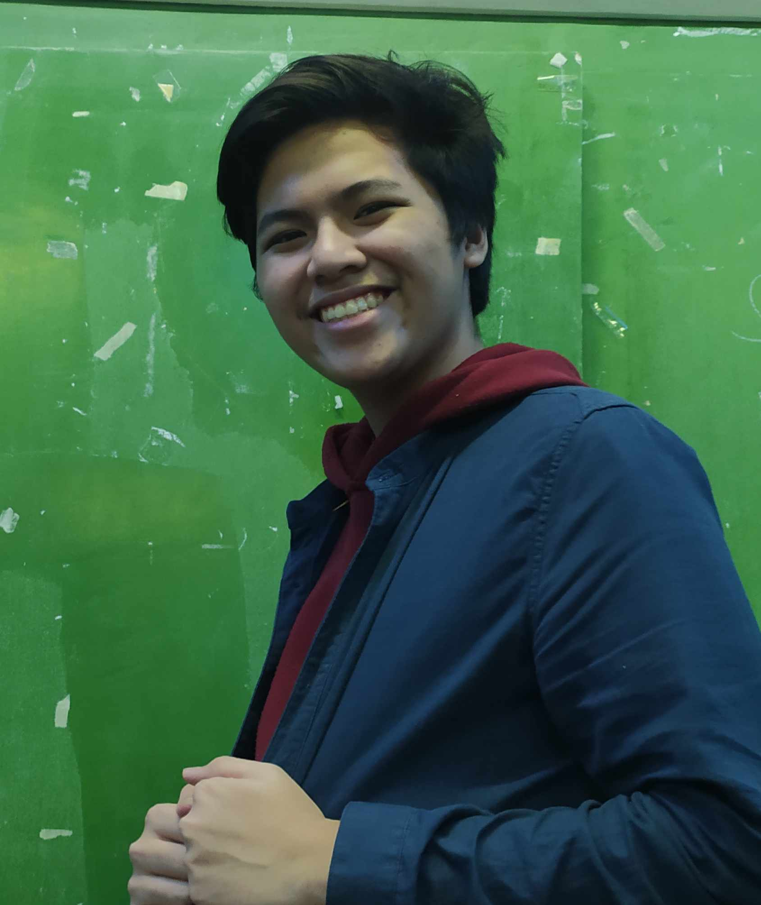
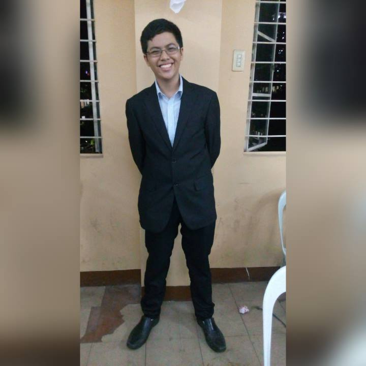
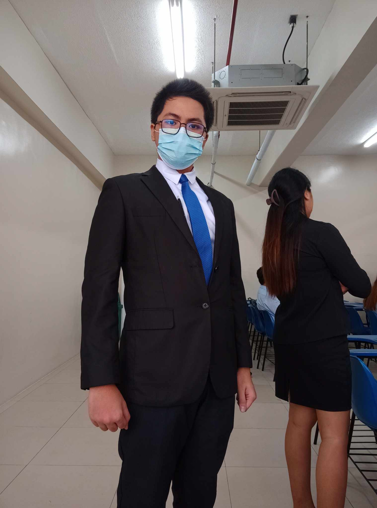

I am Andrew Nicole D. Llego, born on November 30, 2001 in Metro Manila and grew up as the youngest with four older brothers.1 A single mother Genela Llego, and a grandmother Zenadia Dajon was the people who worked hard to raise us.2 My brothers from eldest to youngest, are Arvin, Arnold, Angelo and Audrey.3 As for my father, he left us when I was still a baby and has never made contact ever since.4 Despite this, my family that is with me got along well.5 While I myself do not have a very clear memory of my younger years; I was described as a very energetic child.6 Always running around and has a far too active of an imagination and curious about the things around me.7 Even when I was as young as 5 years old, I was exposed to a lot of English media and that has led to me being quite fluent with the language even then.8 Even my older brothers were the same in being fluent at the early age.10 My mother believed that having this skill would be of great use for us in the future and for the most part, I agree.11
Eventually I managed to get into the public elementary school Center of Excellence (CENTEX).12 CENTEX while a public elementary school is part of a program that is backed by Ayala Foundation.13In that school, I was not one would call an exceptional student.14 Most of my grades would be called middling and I would take most of the blame there.15At that age, I was more concerned with having fun rather than focus on my studies.16 Most of those around me has described me during my childhood as someone bright but does not apply themselves and now I am more grown up I agree.17 Outside of school, despite some financial difficulties, my mother would take me and my brothers to other places as family bonding trips.18Sometimes its local like Luneta Park and other times we go to our cousins in the province of Zambales and Kamarin. 19Those memories of swimming in the beaches with my brothers and running around high up the hill are my most cherished childhood memories.20 So, all in all, while my academic side is not something exceptional, I believe I had a very good childhood.21
Building Myself Up in Teenage Years
 For my high school years, initially the plan was I enter into a private high school but some problems arise.1Three of my eldest brothers are going thru college so it goes without saying that the financial burden that placed on my single mother was immense.2 Combine that with my lackluster grades in my elementary school years where I could not secure a scholarship then the decision to enter a public high school was obvious, at least from my perspective.3 It was then in high school is when I decided to really apply myself academically.4 Focus more on the studying so that I can get decent grades so that I could start establishing a better career in the future.5 At the start, there were some adjustments that needed to be done since I was going from an Ayala backed school into a Public High School.6 There were a lot more people, it was a lot noisier, and the school schedule was less stream lined that I was used to.7 Despite those minor problems, I enjoyed it quite a lot.8
Even though I doubted people around me at the time when they said I had a good mind, I just didn’t apply it, seeing the progress I made academically in high school when I decided to focus was an eye opener.9 In the first year my grades shot up from an average of 85 in elementary to consistent 90s and up. 10In the first Year I was in Section 3 and by the time I was in Second year I jumped up to Section 1.11 Second Year, is also when I met friends that would stick by me all throughout junior high.12 It was a confidence boost to me and being praised for it made me want to try harder. 13I was riding this high point all the way to third year of junior high and it felt as though everything is going to be all right. 14Unfortunately, it is in fourth year that my grandmother started showing obvious signs of Alzheimer's. 15 It started out small like forgetting where she placed things and what date it was. 16We thought it was just her a part of her getting old so it wasn’t something we needed to get alarmed by.17 As I enter fourth year, I had a clear goal in mind for what I wanted to be when I get into college; I wanted to be an accountant like my mother.18 I applied for Senior High in the University of The East and got in the ABM program. 19My academics was still on the good side and with two of my brothers graduating in college, our financial burdens were becoming lighter. Things were going to plan but unfortunately, a global pandemic decided to throw things into chaos.20
When At The Lowest Point, All You Can Do Is Go Up

I graduated Senior High with honors and go into the college I wanted; University of Santo Tomas.1 I had to attend most of my classes online at home due to the pandemic that was spreading across the globe.2 This new online environment didn’t quite sit well with me and adjusting for it was a lot more difficult than expected.3 My grades took a small dip down but I thought it's still manageable but things were about to get worse.4 My grandmothers Alzheimer's’ started getting worse and with me being at home with her, I had to pull double duty of being a care taker and doing online school.5 Our finance may have gotten better but that doesn’t mean all the debts my mother incurred to put my brothers thru college was wiped away as well so we couldn’t hire a 24/7 caretaker so I had to make do.6 This took a lot out of my mental health with worrying over my grandmother, adjusting to a new online platform, and the global pandemic made me unable to properly focus on my studies.7
When Second Year College came around and saw my grades, I knew I couldn’t continue on my dream of becoming an accountant.8 I decided to take a year off college and focus on taking care of my grandmother so that she can at least have a comfortable end.9 It wasn’t always pleasant since she often forgot where she was, who I was, and she had an obsession with money that wasn’t there anymore.10 There were times when care for her got extremely difficult when she refused to sleep, got irrationally mad and hallucinate things that didn’t happen or won’t drink her medicines but I pushed thru with my family.11 My eldest brother started earning quite a lot of money and so during those last years of my grandmother, we went on trips once more.12We went to the beach, the province and all sorts of places so that she wouldn't be cooped up at home doing nothing but forget and my grandmother even managed to attend my Eldest Brother's wedding.13 I like to think she was happy in those final years.14 My grandmother finally died on April 4, 2023.15 After her death, I took a hard look into my life and decided to change course.16With my interest in working with computers rising during the pandemic years, I applied for BSIT at the suggestion of my brothers and mother and went back into the familiar University of the East.17 At the low point of my life, most of the confidence I had built up during my high school years really took a toll, but after just one year into Programming, I find that I quite like it a lot.18 My grades started going back up and I feel like I’m enjoying the lessons more than when I was in accounting.19 And now at the time of writing this, I truly feel like I am on the right track once more.20
It started out small like forgetting where she placed things and what date it was. 16We thought it was just her a part of her getting old so it wasn’t something we needed to get alarmed by.17 As I enter fourth year, I had a clear goal in mind for what I wanted to be when I get into college; I wanted to be an accountant like my mother.18 I applied for Senior High in the University of The East and got in the ABM program. 19My academics was still on the good side and with two of my brothers graduating in college, our financial burdens were becoming lighter. Things were going to plan but unfortunately, a global pandemic decided to throw things into chaos.20
We went to the beach, the province and all sorts of places so that she wouldn't be cooped up at home doing nothing but forget and my grandmother even managed to attend my Eldest Brother's wedding.13 I like to think she was happy in those final years.14 My grandmother finally died on April 4, 2023.15 After her death, I took a hard look into my life and decided to change course.16
With my interest in working with computers rising during the pandemic years, I applied for BSIT at the suggestion of my brothers and mother and went back into the familiar University of the East.17 At the low point of my life, most of the confidence I had built up during my high school years really took a toll, but after just one year into Programming, I find that I quite like it a lot.18 My grades started going back up and I feel like I’m enjoying the lessons more than when I was in accounting.19 And now at the time of writing this, I truly feel like I am on the right track once more.20
{kind=link}
{kind=link}
{kind=link}
{kind=link}
{kind=link}
{kind=link}